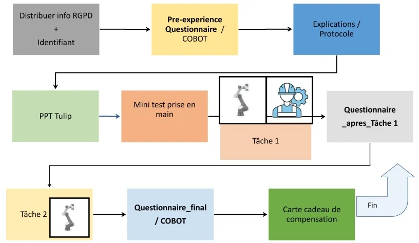

Recherche · Coauteur · SAGIP 2026
Étude pilote Homme–Cobot
Étudier comment l’introduction progressive d’un robot collaboratif influence l’expérience des opérateurs.
- Contribution
- Pré-étude · Tests · Analyse · Article collectif
- Cadre
- Master · SAGIP 2026
- Publication
- Archive HAL · Septembre 2026
Le projet en bref.
- Le besoin
- Examiner comment l’introduction et la vitesse d’un robot collaboratif influencent l’expérience d’un opérateur pendant une activité de contrôle qualité.
- Mon rôle
- Participer, dans le cadre du Master, aux premiers tests, à l’analyse et à la rédaction collective d’un premier article scientifique.
- Le résultat
- Une pré-étude et une publication dont je suis coauteur. Les observations servent à préparer une expérimentation plus poussée et ne constituent pas une validation à grande échelle.

01 / Une première étude dans le cadre du Master
Une première étude dans le cadre du Master
Dans le cadre du Master, j’ai participé à la pré-étude d’un projet consacré à l’intégration d’un robot collaboratif dans une activité de contrôle qualité. L’équipe cherchait à comprendre comment la présence du cobot, sa vitesse et la manière de l’introduire pouvaient influencer l’expérience de l’opérateur. Cette première étape a associé des tests, une analyse des données et la rédaction collective d’un premier article scientifique, dont je suis coauteur.
Il s’agit d’une étude pilote, menée avant une seconde phase d’expérimentation plus approfondie avec davantage de données. Elle permet d’examiner le protocole, de recueillir de premières observations et de dégager des pistes pour la suite. L’article présenté ici correspond à cette première étape ; la fiche en restitue le contexte, la méthode et les limites sans confondre ces premiers résultats avec les conclusions d’une étude à plus grande échelle.
02 / Comparer les trajectoires d’intégration
Comparer les trajectoires d’intégration
Neuf participants ont réalisé une activité d’inspection en laboratoire, répartis entre trois scénarios. Chacun devait contrôler deux lots successifs de quinze raquettes à neige. Selon le scénario, l’expérience passait d’un cobot lent à un cobot rapide, d’une inspection manuelle à une assistance lente, ou d’une inspection manuelle à une assistance rapide. La comparaison porte donc sur la trajectoire d’introduction de l’assistance, et pas seulement sur la présence du robot à un instant donné.
Le protocole associait une préparation, une familiarisation avec la tâche, deux phases d’inspection et des questionnaires. Les mesures combinaient des indicateurs de réalisation, comme le temps et les erreurs, avec des évaluations de l’expérience ressentie : charge mentale, activation émotionnelle, engagement et stress. Croiser ces dimensions permettait d’examiner si une évolution de l’expérience subjective s’accompagnait aussi d’une différence de performance dans la tâche.
- Passage d’un cobot lent à un cobot rapide.
- Passage d’une inspection manuelle à une assistance lente.
- Passage d’une inspection manuelle à une assistance rapide.


03 / Ma participation
Ma participation
Ma participation s’inscrit dans cette première étape du projet de recherche, menée dans le cadre du Master. J’ai pris part à la phase de tests et d’analyse, puis au travail collectif qui a abouti à un premier article scientifique. Cette contribution associe donc la conduite d’une pré-étude et sa restitution, avant la préparation d’une expérimentation plus poussée. Mon nom figure parmi les coauteurs de la publication présentée ci-dessous.
Cette expérience m’a permis de participer à une démarche dans laquelle les résultats doivent être reliés au protocole et à ses contraintes. L’analyse ne consiste pas seulement à relever des différences : elle demande aussi de regarder ce que le nombre de participants et les conditions de l’expérience permettent de conclure. La rédaction de l’article donne une forme partageable à ce travail, en présentant la méthode, les observations et les questions qui restent ouvertes.
04 / Résultats et portée
Résultats et portée
Les résultats de l’étude pilote suggèrent que la manière d’introduire le cobot peut modifier la charge mentale et l’activation émotionnelle ressenties. Dans cet échantillon, une introduction progressive est associée à une expérience différente de l’arrivée directe d’un cobot rapide. Les trajectoires d’adaptation méritent donc d’être étudiées, même lorsque deux scénarios aboutissent finalement à une assistance rapide.
Les indicateurs de temps et d’erreurs ne permettent toutefois pas de conclure à un bénéfice objectif robuste d’un scénario. La portée des observations est limitée par le faible effectif, la simulation du scan et certaines difficultés d’interface. Ces points justifient une phase d’expérimentation élargie. L’article évoque notamment l’étude d’une vitesse adaptative et de la fiabilité du diagnostic comme pistes pour mieux comprendre l’interaction Homme–Cobot.
05 / Lire la publication
Lire la publication
ARTICLE SCIENTIFIQUE · SAGIP 2026
Charge mentale, activation émotionnelle et adaptation progressive lors de l’intégration d’un cobot en contrôle qualité : étude pilote de l’interaction Homme-Cobot
Laurent Joblot, Florian Magnani, Arnaud Carbonnel, Jessica Grace Ponguenewende, Titouan Brachet et Mario Passalacqua.
SAGIP, juin 2026, Bordeaux, France. Version déposée sur HAL le 11 septembre 2026, identifiant hal-05746496v1. Document diffusé sous licence CC BY 4.0.

LIRMM · ÉQUIPE ADVANSE · STAGE DE FIN D’ÉTUDES
Concevoir une expérience VR accompagnée par l’IA.
Retrouver une démarche de tests utilisateurs sur un prototype immersif.

Interaction gestuelle · Python & Unity
Naviguer avec les bras
Observer comment plusieurs modes d’interaction sont comparés et discutés.